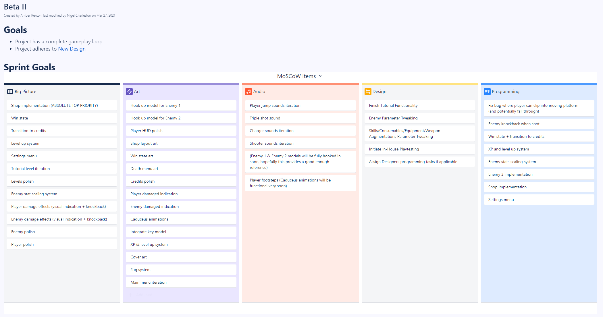

The final push! This past sprint, I've done a lot more hands-on work than usual in order to make up for member absence. Now that development has officially come to a close, I feel a lot more comfortable discussing my thoughts on the project as a whole, as well as what can be done in the future.
Studio-wide & Leads Meetings
The leads meetings this sprint became shorter as our goals became more clear. We followed the fairly straightforward format of playtesting off of development, discussing the state of the game, identifying tasks, and discussing any last minute topics at the end. I plan on scheduling a post-mortem with the leads within the next few weeks (but after the semester ends).
Preparing for the final studio-wide meeting was slightly more work intensive than other meetings. I created a member feedback form, finalized the summer studio application, and recorded the final "progress" video. As per usual, it can be seen before.
It was a little unfortunate to capture bugs and clearly unfinished work in the final progress video, but it is what it is. Although I've only ever recorded progress videos for Circuitry and Project Cloud, the stark difference between the final videos for both games is telling. Somehow, Project Cloud fell uniquely behind this semester. I have a few thoughts on why that may be, but I will save those for later.
Creating a Sprint Plan
At the eve of Pre-Beta II, which began officially on March 28th, I once again sat down and outlined all tasks to be completed over the duration of the sprint. Though this was still a big undertaking, it was a little easier this time around as many tasks from the previous sprint carried over. Still, it took a lot of coordination with other leads to pull off. I'm told that the "Sprint Goals" section (pictured below) is the most helpful part of these documents. In these sections, I lay out several big picture "goals" for each department, and then use these goals to create the appropriate tasks. Although the audio team prefers to create tasks independently, I've been told that having this section makes task creation feel less like "random guessing" to them - so, for the future, this is a process that will most likely stick!
Cover Art Drafting
Now that development is wrapping up, a few important tasks are introduced - a large one being cover art. As the art team is stretched a bit thin at the moment, I volunteered to take on this task. Admittedly I'm a bit rusty when it comes to drawing, but a mockup of the cover art that conveys its general layout can be seen below.

I posted this in #art-preview for feedback, and reception was generally positive. I did receive some feedback in an art meeting that Hermes' left arm (the one not holding the Caduceus) is in a bit of an awkward spot, so I did a quick iteration to put it in a slightly more sensible place.

I've begun lining the art, but to be completely honest, I am not satisfied with the linework so far. I'm going for a very Hades-esque style (by Hades, I'm referring to the indie game that came out recently), which is very much not something I'm used to. Below is a work in progress shot of the lineart that I am very-not-proud-of. I promise, it'll look better when it's done!
Animation Assistance
Another thing I helped the art team out with these past two weeks has been setting up and debugging animations. The enemy animations have been pretty awkward so far - we have these awesome, 3rd party animations, but hooking them up properly has been very difficult. I volunteered to take another look at what was causing the animations for the Charger and the Shooter to go haywire. This entailed going through both of their animators, as well as making some adjustments through code. Very standard, but the most interesting thing I did was rework the Shooter attack into a separate public function (it sounds simple, but it was tangled up with a lot of other code). In doing this, I was able to create an animation event on its "shoot" animation that spawned its projectile. Prior to this, the projectile spawned independent of the animation, making it appear very off-time. It may not be very clearly visible below, but you can see the animation event on the Shooter's shooting animation.

I also set up a very basic iteration of the animator for the Flying enemy (the Phoenix). It's due to change a lot - I wasn't able to test it as the Flyer isn't implemented yet - but I learned a bit about animation layers along the way.
Final Thoughts
I had a pretty relaxing time over the past 2 weeks. It's a bit selfish, but it's nice to be doing some direct work on the project lately - this kind of thing is much more up my alley than production. In these final two weeks, I imagine production work will continue to be fairly minimal. Thus, I'll be turning my focus to some "marketing" work (cover art, title art, the trailer, project title, etc) as well as planning for the summer project. The next dev blog, I believe, is the last, so I will aim to type up a comprehensive post-mortem of the past semester. For now, I'm optimistic, and am excited for these final two weeks of development.